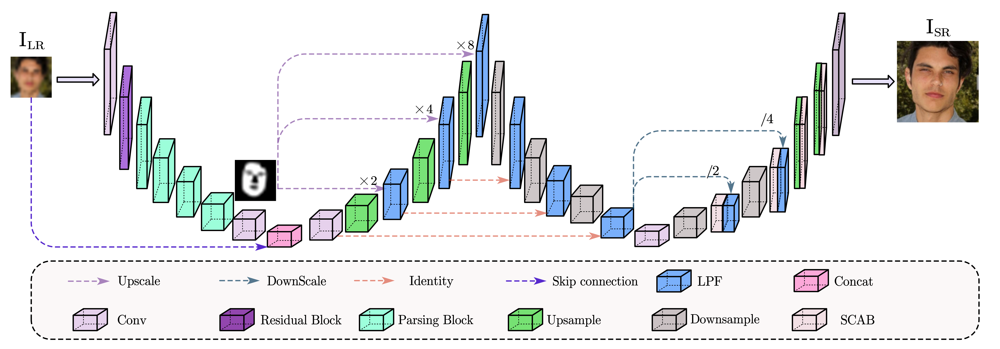

Biography
I am a B.S. candidate of ChongXin College in the School of Information Science and Engineering,
Shandong University ,
advised by Prof. Yang Yang.
My research interests include computer vision and deep learning, specifically for the restoration of low quality images.
News
2024.07: I was honored to be one of the reviewers for ICONIP 2024, reviewing four articles!
2024.07: Our paper is being reviewed by Image and Vision Computing. This is an article I contributed as an undergraduate student, really so nervous!
2024.05: Our patent(NO.2024105764443) entitled "A Robust lane Detection Method with Limited computational Resources" has been filed with the Intellectual Property Office.
The inventors are Ming Fang, Hao Liu, Wenchao Qiao, Yi Chi, Lingtao Zhou, Xiaojie Chen, Jiajin Lu.
2024.03: I won the Advanced Individual of Undergraduate Innovation and Entrepreneurship Shandong University !
2023.12: I won the Second Prize of Undergraduate Intelligent Vehicle Competition National!
This is the first time that Shandong University Qingdao Campus has won a national award in this project!
2023.11: I won the First Prize of Undergraduate Mathematical Contest in Modeling Provincial!
The teammates are great!
2023.09: I won the Second Prize of Shandong University Academic Award Scholarship!
2022.09: I won the Second Prize of Shandong University Academic Award Scholarship!
Publications
|  |
Hao Liu, Yang Yang, Yunxia Liu
W-Net: A Facial Feature-Guided Face Super-Resolution Network
Image and Vision Computing(JCR Q1,IF=4.2)
[Paper]
[Under Review]
|
Projects
|
Hao Liu, Zheng Shi, Yi Chi, Yuan Zhang
MIT IEECS Lib6.01(Pioneer3 Smart Car)
[Demo]
|
Awards
|
Hao Liu, Yi Chi, LingTao Zhou, Jiajin Lu, Xiaojie Chen
Second Prize of Undergraduate Intelligent Vehicle Competition National
[Patent]
[Demo]
|
|
Yi Chi, Hao Liu, Yuxin Cui
First Prize of Undergraduate Mathematical Contest in Modeling Provincial
[Paper]
[Demo]
|
Statistics